Resident Evil 2, 1998
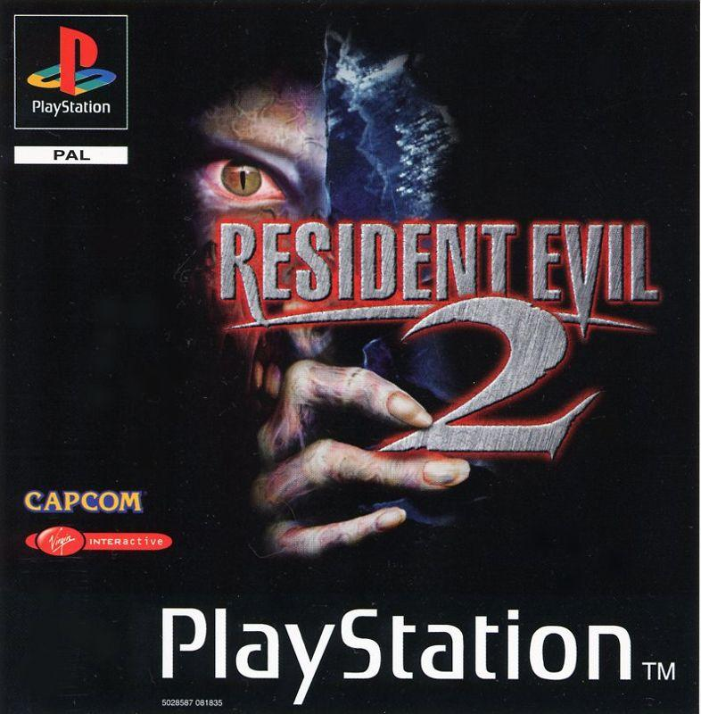
Retrouvez ici les principales informations utiles concernant Ada Wong : ses différentes
missions, ses
compétences, son équipement ainsi que les événements majeurs auxquels elle a été confrontée.
Cette page rassemble également une chronologie de ses apparitions, les personnages qu’elle a rencontrés et les
différentes armes biologiques liées à ses missions.
Un véritable dossier pour mieux comprendre son parcours, son environnement et son rôle dans l’univers de
Resident Evil.


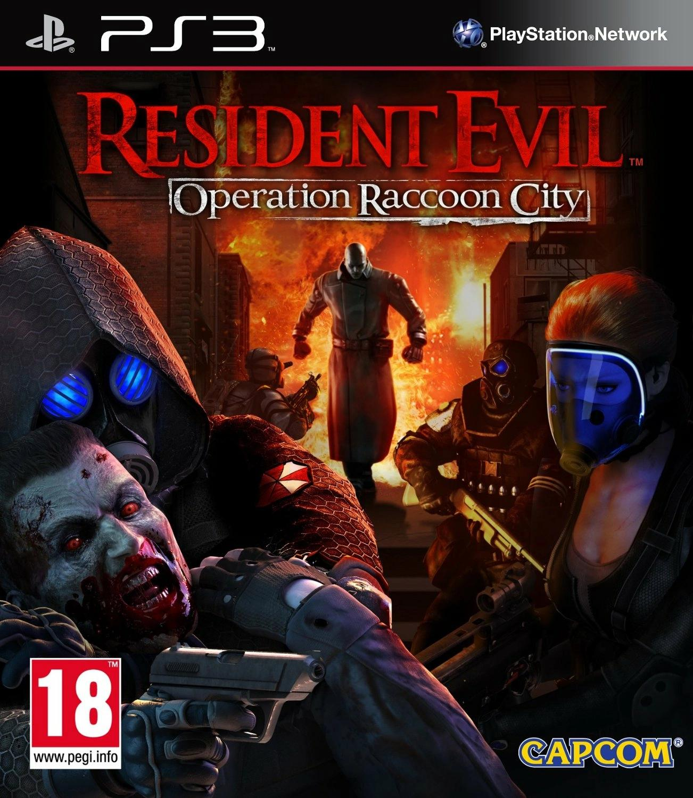
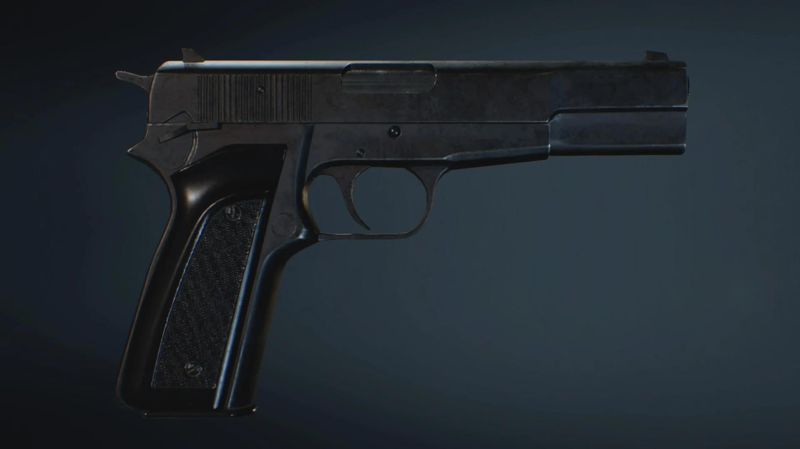
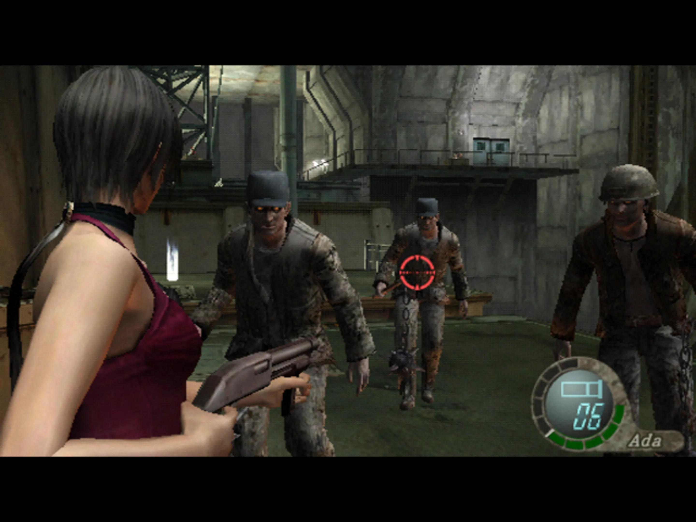
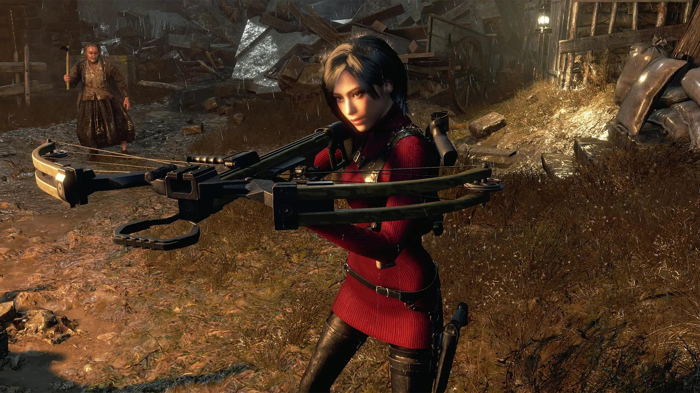
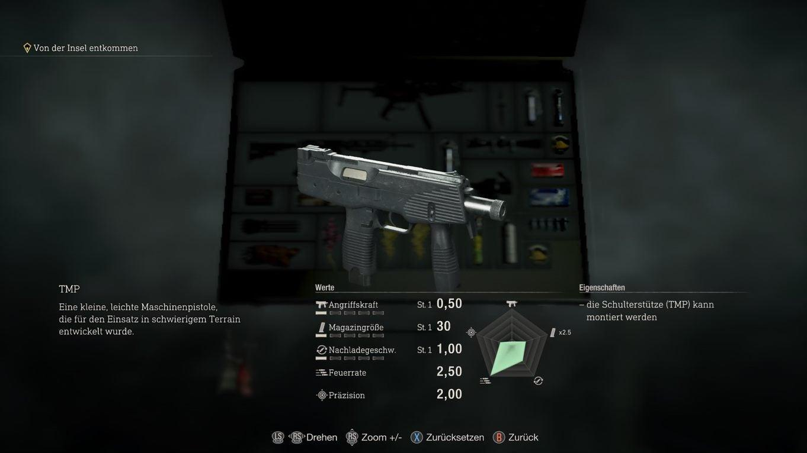
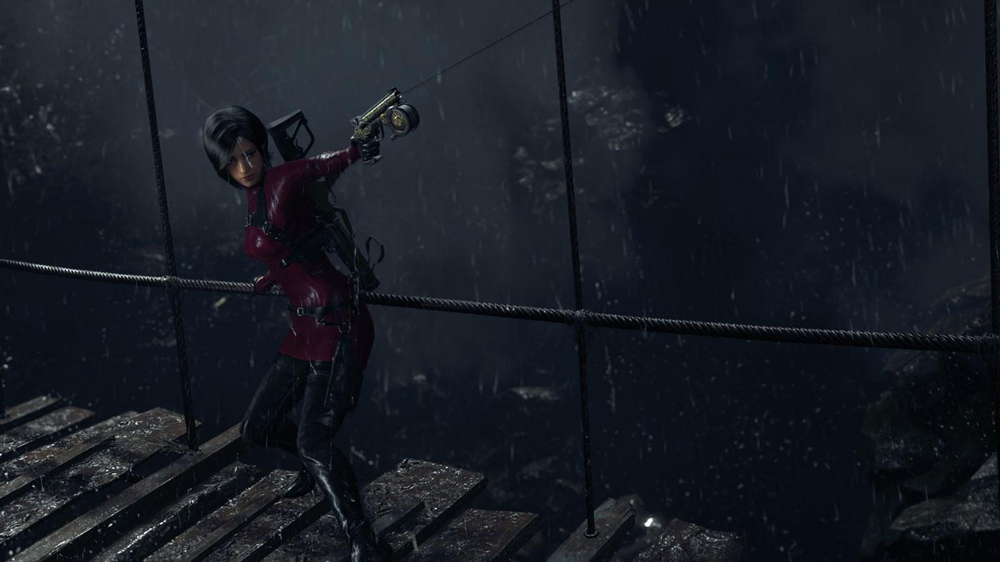
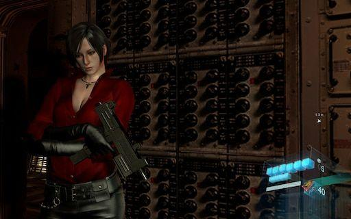
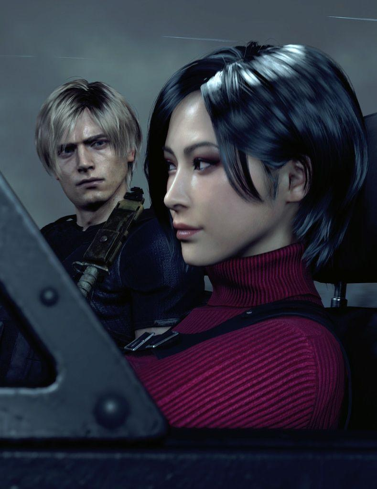
Ada rencontre Leon à Raccoon City en 1998. Elle lui cache d'abord sa véritable identité et ses objectifs,
mais les deux finissent par s'entraider pour survivre.
Malgré leurs intérêts opposés à plusieurs reprises,
Ada
intervient régulièrement pour protéger Leon. Leur relation évolue au fil des années et reste marquée par une
forte confiance, des secrets et une attirance réciproque.
Wesker fait appel à Ada pour récupérer des informations et des échantillons biologiques. Dans Resident Evil 4, il lui confie notamment la mission de récupérer un échantillon de Las Plagas. Ada accepte ses missions mais ne lui est jamais totalement loyale, préférant garder ses propres objectifs secrets.
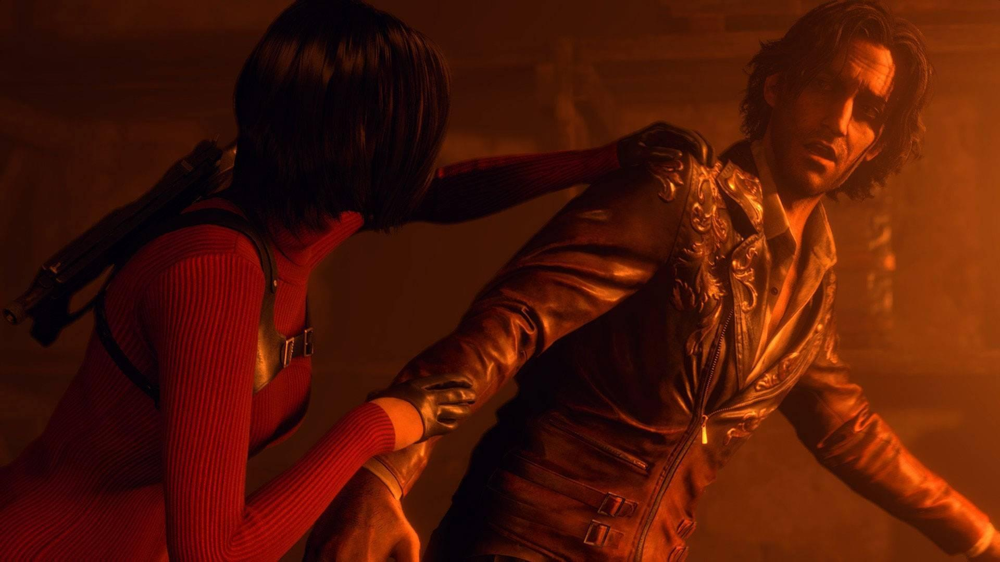
Ancien chercheur ayant travaillé sur les recherches liées aux Las Plagas, Luis fournit à Ada des informations
importantes.
Elle cherche notamment à le protéger tout en récupérant les données et échantillons dont elle a besoin.
Leur relation reste principalement professionnelle, mais Ada lui porte suffisamment d'attention pour
intervenir en sa faveur.
Krauser travaille lui aussi pour Wesker lors des événements de Resident Evil 4.
Ada et lui ont donc un objectif commun, mais ils ne se font pas confiance. Krauser se méfie de ses intentions
et Ada considère qu'il représente surtout un obstacle supplémentaire à sa mission.
Carla est une chercheuse transformée par le C-Virus et manipulée pour prendre l'apparence d'Ada.
Dans Resident Evil 6, elle utilise cette identité pour mener ses propres actions et faire croire qu'Ada est
responsable de plusieurs événements.
Ada découvre progressivement la vérité et cherche à mettre fin aux agissements de Carla.
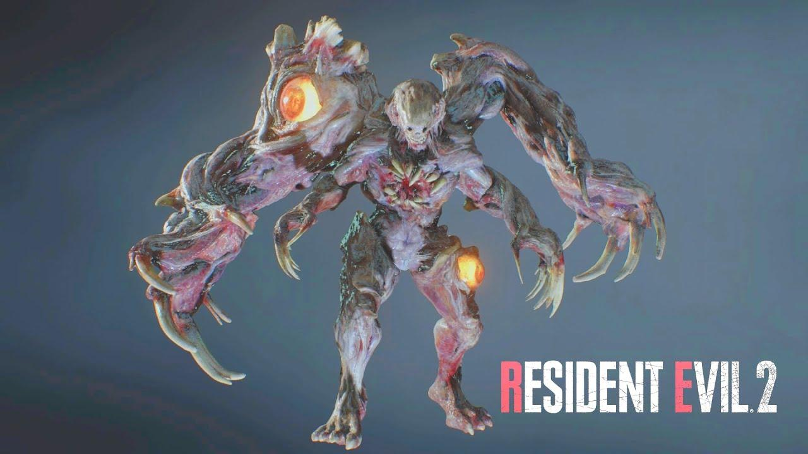
Une arme biologique expérimentale développée par William Birkin pour Umbrella.
Le virus provoque des mutations extrêmement importantes et incontrôlables chez son hôte.
Ada est envoyée à Raccoon City pour récupérer un échantillon du G-Virus. Sa mission la met directement en
conflit avec Annette Birkin et la créature qu'est devenu William.
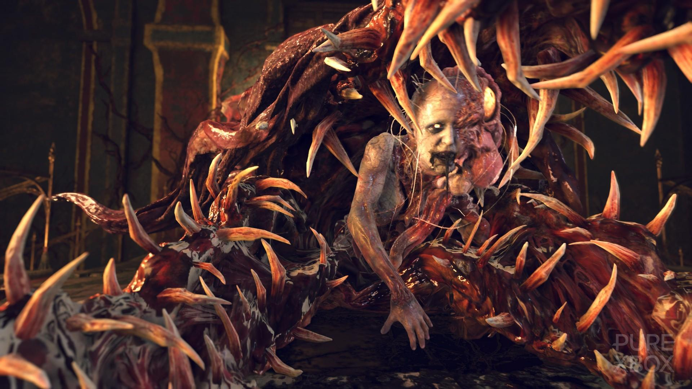
Des parasites capables de prendre le contrôle du système nerveux de leurs hôtes.
Les Los Illuminados utilisent les Plagas pour contrôler leurs membres et créer des armes biologiques.
Ada est envoyée en Espagne pour récupérer un échantillon de la Plaga dominante, sous les ordres de Wesker.
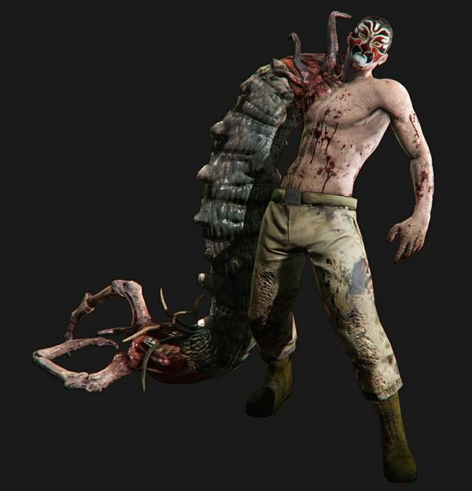
Un virus provoquant de nombreuses mutations chez les personnes infectées. Les victimes peuvent se transformer
en différentes formes d'A.B.O., notamment les J'avo et les Chrysalides.
Ada enquête sur les recherches liées au C-Virus et découvre le rôle de Carla Radames et de Simmons dans son
développement.
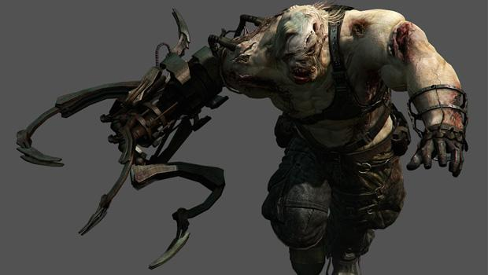
Les A.B.O. (Armes Biologiques et Organiques, ou B.O.W. en anglais) sont des organismes transformés ou créés
pour être utilisés comme armes.
Ada est régulièrement confrontée à ces créatures au cours de ses missions : mutants issus du G-Virus,
créatures contrôlées par les Plagas ou encore J'avo issus du C-Virus.
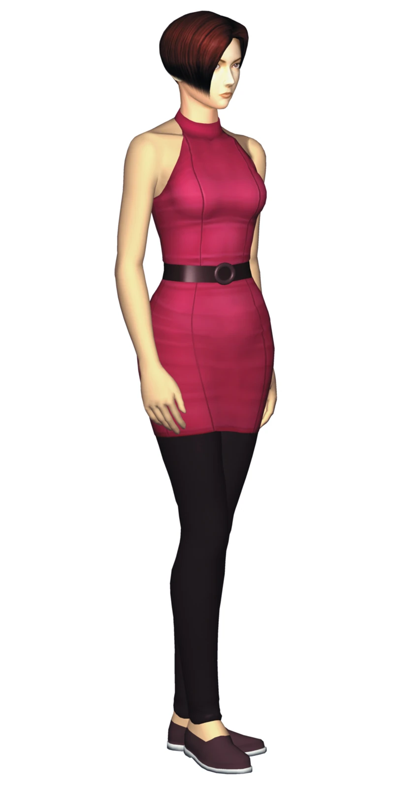
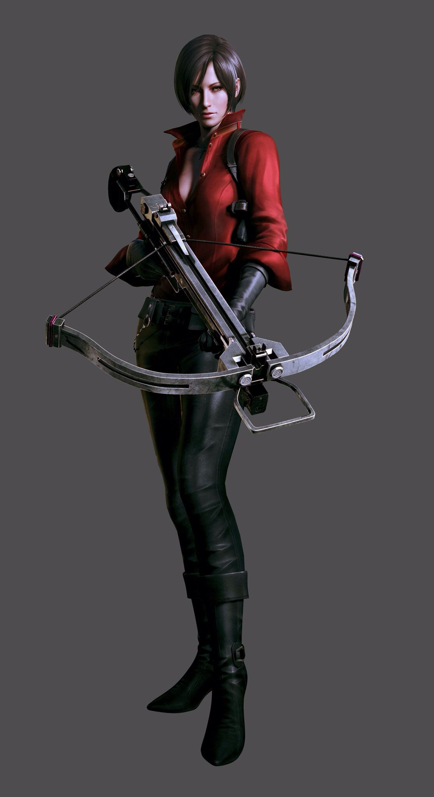
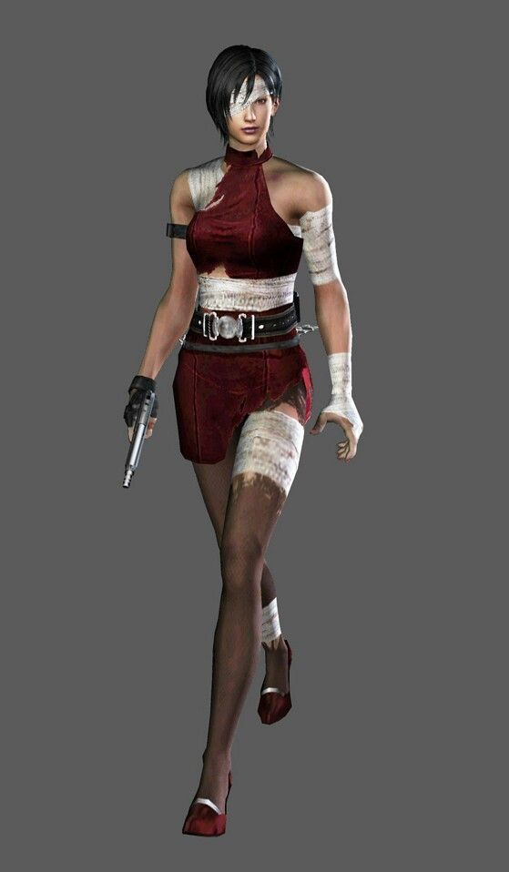
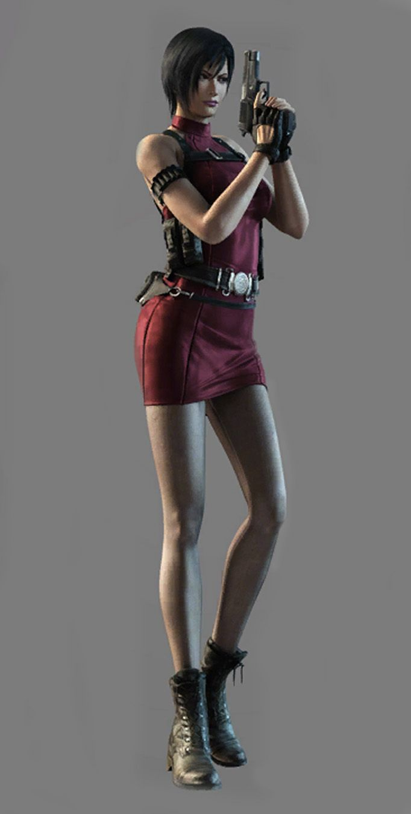
« I'm just a woman who fell in love with you. Nothing more. »
« Maybe you forgot, Wesker. I don't always play by your rules. »
« Need a ride, handsome? »
« Ah... Now I can use my new toy. »
« We're beyond sympathy at this point. We're beyond humanity. »